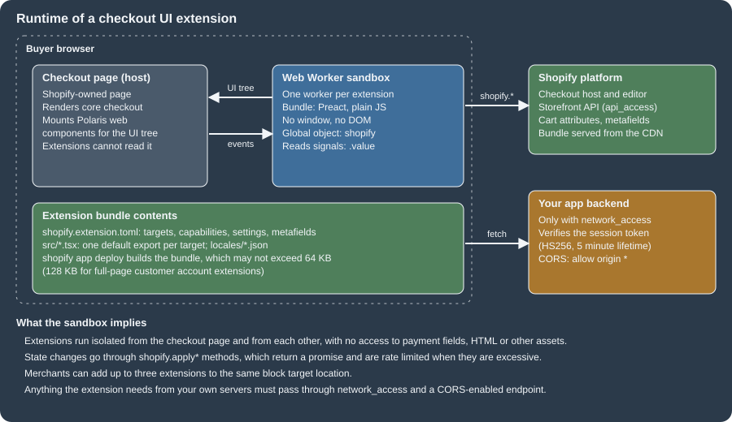
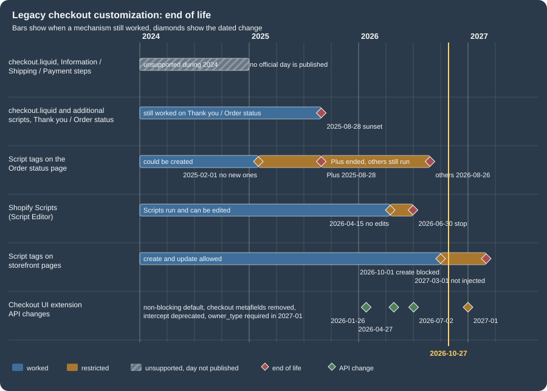
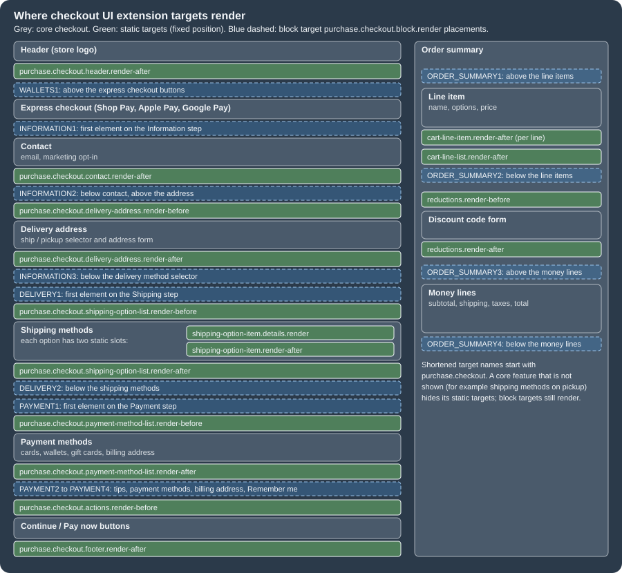

Checkout Extensibility
|
This content was generated with the assistance of AI and should be verified against the official documentation before being relied on in production. |
This page was written against API version 2026-10 of the checkout UI extensions (the stable version released on
2026-10-01), Shopify CLI 5.0.0, the @shopify/ui-extensions package (the npm tag 2026-10 points to 2026.10.2, while
the latest tag still points to 2026.10.0), Preact 10.29, the Polaris web components that ship with that package and
@shopify/ui-extensions-tester 2026.10.2, and checked on 2026-10-27. Checkout extensibility is the name Shopify gives to
the model in which a merchant never edits checkout code: the checkout itself belongs to Shopify, and everything that is
custom is an app extension that Shopify loads into well-defined slots. The model applies to every plan, but not every
slot is open to every plan. Extensions on the Information, Shipping and Payment steps need Shopify Plus, extensions on
the Thank you and Order status pages are available on all plans except Shopify Starter, and the branding API is Plus
only. The page states the required subscription plan wherever it matters.
Before that model existed, checkout was customized in four ways: a Plus-only checkout.liquid layout, free-form
"additional scripts" pasted into the checkout settings, Ruby Shopify Scripts that changed prices, shipping rates and
payment methods, and script tags that apps injected through the Admin API. By the check date every one of those is
either gone or has a dated end: checkout.liquid is unsupported on the Information, Shipping and Payment steps and was
sunset on the Thank you and Order status pages on 2025-08-28, Shopify Scripts stopped executing on 2026-06-30, script
tags are blocked on the Order status page since 2025-08-28 (Plus) and 2026-08-26 (other plans), and on storefronts they
cannot be created from 2026-10-01 and stop running on 2027-03-01. Older books and blog posts still describe the legacy
mechanisms as current, so this page explains them briefly, as history, next to the dated replacements.
The page sits after the pages on plans and Shopify Plus and on
shipping, taxes, payments and checkout
settings, which describe the checkout that extensions customize, and on
apps and scaffolding, which creates the app that carries the
extension. It covers checkout UI extensions in depth (project layout, every key of shopify.extension.toml, the shopify
global object, targets and placement references, target APIs, capabilities, network access and session tokens),
the Thank you and Order status pages, the replacement of blocking UI logic by validation Functions, checkout branding,
testing with the official tester library, deployment, and a migration playbook for checkout.liquid, additional
scripts, Scripts and script tags. Shopify Functions themselves, web pixels and theme app extensions have their own pages
and are only touched where they replace a legacy mechanism.
The running example is the Pocket Coffee shop. Its companion app ships one checkout UI extension with five modules: a free-shipping progress banner (the 40 EUR threshold of the Spain zone), a roast-date line under every cart line (read from a product metafield), a gift-message field, a Thank you banner for the Coffee Club and an Order status banner. A second extension, a cart and checkout validation Function, enforces the 5 kg parcel limit that the shop applies to every shipment.
This page was prepared without a Shopify account, so no extension was ever installed in a store, no checkout was
rendered, and nothing was deployed. What ran locally is listed in What was run and what was not: the
shopify app build of the extension and of a Function, TypeScript checking, eight unit tests that execute the extension
modules with the official tester library, GraphQL documents validated against the downloaded 2026-10 Admin and
Storefront schemas, and a session-token verifier exercised with locally minted tokens.
Checkout extensibility at a glance
Shopify offers four technologies for customizing checkout, and one decision tree selects among them. Choose by the kind of change, not by the page: user interface goes into a UI extension, business rules go into a Function, measurement goes into a web pixel, and look and feel goes through the branding API.
| Technology | What it customizes | Availability at the check date |
|---|---|---|
Checkout UI extensions |
Custom UI and content in the checkout steps, on the Thank you page and (through customer account extensions) on the Order status page. |
Information, Shipping and Payment steps: Shopify Plus. Thank you and Order status: all plans except Shopify Starter. Market overrides in the editor: Advanced and Plus. |
Post-purchase extensions |
A page between payment and the Thank you page, mainly for upsells. |
All plans except Starter. In beta: free to use on a development store, access must be requested for a live store. |
Shopify Functions |
Backend logic: discounts, delivery options, payment options, cart and checkout validation, cart transforms, order routing, fulfillment constraints. |
All plans except Starter; custom apps that contain Functions need Shopify Plus. Merchants that still have
|
Web pixel extensions |
Collection of customer behaviour events, including on the Thank you and Order status pages. |
All plans except Starter. |
GraphQL Admin API branding |
Colors, typography, corner radius, header and footer of checkout, checkout queue, UI extensions and customer account pages. |
Shopify Plus only. |
Every checkout UI extension runs inside a sandbox. Shopify loads the compiled bundle from its own CDN into a Web Worker,
the extension reads checkout state from a global object called shopify, and it describes its interface as a Preact tree
of Polaris web components (s-banner, s-text, s-checkbox). The host page turns that tree into real elements, so the
extension never touches the checkout DOM and inherits the merchant’s branding automatically.

The consequences of that design shape the rest of the page. An extension cannot read payment fields, cannot run
arbitrary DOM code, can use only a limited set of web APIs, and can change checkout only through the methods that the
shopify object exposes (shopify.applyAttributeChange, shopify.applyMetafieldChange and their relatives). In return
the extension survives every checkout redesign, works in one-page checkout, three-page checkout and the accelerated Shop
Pay layout without changes, and is upgrade-safe.
Source: Shopify: Checkout UI extensions
The sunset of the legacy mechanisms
Four legacy mechanisms are retired on different dates. The figure shows their lifetimes; the table that follows gives
every date with its source. The dates for the Thank you and Order status pages differ between Plus and the other plans,
and one date, the end of checkout.liquid on the Information, Shipping and Payment steps, has no official day: Shopify’s
documentation says only that the layout is "unsupported" there, and the day that circulates in guides (in August 2024)
is not stated on any official page, so this page does not quote it.

| Date | Mechanism | What happens |
|---|---|---|
2024 (no official day) |
|
Unsupported. Plus stores had to move to checkout extensibility; the layout file no longer controls these steps. |
2025-02-01 |
Script tags with |
Apps can no longer create them. |
2025-08-28 |
|
Sunset. The additional scripts box in the checkout settings becomes view-only. |
2025-08-28 |
Script tags on the Order status page, Plus stores |
Stop running. |
2026-04-15 |
Shopify Scripts |
Editing and publishing new Scripts is no longer possible. |
2026-06-30 |
Shopify Scripts |
All Scripts stop executing; published Scripts are deactivated. |
2026-08-26 |
Thank you and Order status pages, non-Plus |
Deadline to upgrade the existing pages; script tags on the Order status page stop running for these stores. Stores on the Pause and Build plan are upgraded automatically. |
2026-10-01 |
Storefront script tags |
|
2027-03-01 |
Storefront script tags |
Shopify stops injecting script tags into storefronts. The |
Source: Shopify: checkout.liquid, Shopify: Order status script tags, Shopify changelog: Script tags are deprecated and will stop running on March 1, 2027, Shopify changelog: Shopify Scripts will be deprecated on June 30, 2026
checkout.liquid, in brief
checkout.liquid was a theme layout, layout/checkout.liquid, available only to Plus merchants after Shopify support
enabled it. It replaced theme.liquid for the whole checkout and had to output two required objects,
content_for_header (Shopify’s scripts for hCaptcha, apps and more) and content_for_layout (the form fields and content
of the current step); without them the file could not be saved. Everything else was optional. The objects could not be
edited before rendering, so customization meant JavaScript that altered the already rendered page.
<!DOCTYPE html>
<html lang="{{ locale }}" dir="{{ direction }}" className="{{ checkout_html_classes }}">
<head>
<meta charset="utf-8" />
<title>{{ page_title }}</title>
{{ content_for_header }}
{{ checkout_stylesheets }}
{{ checkout_scripts }}
</head>
<body>
{{ skip_to_content_link }}
<header class="banner" data-header role="banner">
<div class="wrap">{{ content_for_logo }}</div>
</header>
{{ order_summary_toggle }}
<div class="content" data-content>
<div class="wrap">
<div class="main">
<main class="main__content" role="main">{{ content_for_layout }}</main>
<footer class="main__footer" role="contentinfo">{{ content_for_footer }}</footer>
</div>
<aside class="sidebar" role="complementary">
<div class="sidebar__content">{{ content_for_order_summary }}</div>
</aside>
</div>
</div>
{{ tracking_code }}
</body>
</html>Source: Shopify: checkout.liquid (abridged: the breadcrumb, alternative payment methods and logo objects of the original are omitted)
The layout lived in two worlds. A store with access to checkout.liquid ran the Maintenance version of checkout, a
frozen copy of Standard that did not receive new Shopify features; disabling the layout moved the store back to
Standard. The whole checkout was one URL, so scripts identified the step with three JavaScript objects and reacted to two
page events.
| Legacy API | Meaning |
|---|---|
|
Current step: |
|
Page type: |
|
Defined when the customer revisits the page, which then behaves as the Order status page. |
|
jQuery events ( |
Source: Shopify: checkout.liquid
None of this exists in the extension model: there is no step object, no DOM to patch and no jQuery. A script that read
Shopify.Checkout.step becomes a UI extension at the static target of that step, and a script that watched page:load
for tracking becomes a web pixel. The playbook at the end of the page maps each legacy habit to its replacement.
Additional scripts and Shopify Scripts
Additional scripts were a free-text box in the checkout settings, rendered on the Thank you and Order status pages for tracking and small page changes. The box became view-only on 2025-08-28. A store that still has content in it finds the scripts categorized by purpose (for example authentication or order tracking) in the upgrade guide, which also lets the merchant deactivate them.
Shopify Scripts were Ruby programs written in the Script Editor app, in three kinds: line item scripts (prices and discounts of cart lines), shipping scripts (rename, hide, reorder shipping options and discount shipping) and payment scripts (rename, hide and reorder payment gateways). Shopify announced on 2026-04-09 that editing and publishing would stop on 2026-04-15 and that all Scripts would stop on 2026-06-30. Their replacement is Shopify Functions, which compile to WebAssembly and run on Shopify’s infrastructure. By behaviour, line item scripts correspond to the discount and cart transform Functions, shipping scripts to the delivery customization and discount Functions, and payment scripts to the payment customization Function (a mapping by behaviour, not an official equivalence table). A Scripts customizations report in the admin lists which of a store’s scripts a Function or a public app can replace.
Script tags
A script tag loads a JavaScript file onto storefront pages (and, until it was retired, onto the Order status page) without
any change to theme code. It was created with the scriptTagCreate mutation, which needs the write_script_tags access
scope, and a displayScope of ONLINE_STORE, ORDER_STATUS or ALL. In the 2026-10 Admin schema ALL and
ORDER_STATUS are marked deprecated (ORDER_STATUS is "unavailable as a mutation input"), which matches the earlier
sunset of the Order status page. Shopify’s reasons are visibility and safety: a script tag does not appear in the theme
editor, so a merchant cannot see or disable it, and an attacker who controls the script URL runs code on every page that
loads it.
The migration has two branches. A script that renders or changes storefront content becomes an app embed block in a theme app extension, which the merchant switches on in the theme editor (it is active per theme, so it must be active on whichever theme the store publishes). A script that only collects analytics or conversions becomes a web pixel, which needs no activation by the merchant. A script that customized the Order status page becomes a customer account UI extension, or a web pixel for tracking. Script tags that your app left behind can be audited and removed because the read and delete operations survive the sunset.
query AuditScriptTags {
scriptTags(first: 100) {
nodes {
id
src
displayScope
createdAt
}
pageInfo {
hasNextPage
endCursor
}
}
}mutation DeleteScriptTag($id: ID!) {
scriptTagDelete(id: $id) {
deletedScriptTagId
userErrors {
field
message
}
}
}Both documents were validated against the Admin GraphQL schema of version 2026-10 and are valid; a copy with the typo
displayScop is rejected with "Cannot query field displayScop on type ScriptTag. Did you mean displayScope?". They were
not executed, because that needs a store and an access token (use ${SHOPIFY_ACCESS_TOKEN} in a script, never a literal
token).
Release the replacement before deleting the script tag, because an app embed block is inactive until a merchant turns it on and deleting first leaves a gap. While both run, the script loads twice, which doubles analytics events or renders the app’s interface twice. Admin-created custom apps cannot use app extensions at all, so they have no extension-based replacement: the script has to move into the theme (a custom Liquid block or the code editor), or the third party that created the app has to release a real app.
Source: Shopify: Storefront script tags
Upgrading a store
Shopify generates a personalized upgrade guide in the admin (Settings, Checkout, the Configurations section, the Review
link of the upgrade notice). It lists the customizations found on the Thank you and Order status pages, the installed
apps that were updated to be compatible (with a Manage action for app pixels and an Add blocks action for page
customizations), the incompatible apps (which need an update from their developer or a replacement) and the additional
scripts, which can be deactivated once replaced. The last step, the Upgrade button, replaces the old pages with the new
ones; pausing a store upgrades them permanently and automatically. Shopify’s developer documentation adds that after an
upgrade a store could in some cases revert to checkout.liquid until the sunset dates, and that all pre-purchase and
after-purchase upgrades of one store are best planned together, so that the store keeps one technology stack, applies
styling once and manages one sunset date.
Apps can read the upgrade state of a store from the Admin API. The 2026-10 schema exposes typOspPagesActive on
CheckoutProfile ("whether the checkout profile Thank You Page and Order Status Page are actively using extensibility or
not"), and marks checkoutProfiles as deprecated in favour of checkoutAndAccountsConfigurations. The following document
asks for both and was validated against the schema.
query CheckoutUpgradeState {
checkoutAndAccountsConfigurations(first: 5, query: "is_published:true") {
nodes {
id
name
isPublished
}
}
checkoutProfiles(first: 5, query: "is_published:true") {
nodes {
id
name
isPublished
typOspPagesActive
}
}
}Plans, editions and limits
Checkout extensibility is not uniform across plans. The checkout and accounts editor, where a merchant places and configures extensions, is available on every plan from Basic up. What differs is which extension surfaces open and which API is reachable.
| Capability | Basic and Grow | Advanced | Plus |
|---|---|---|---|
Checkout and accounts editor |
Yes |
Yes |
Yes |
Apps and extensions on the Thank you and Order status pages |
Yes |
Yes |
Yes |
UI extensions on the Information, Shipping and Payment steps (including order summary, header and footer targets of the checkout) |
No |
No |
Yes |
Market-specific overrides of branding, settings and extensions |
No |
Yes |
Yes |
Checkout Branding API and Checkout and Accounts Configuration API |
No |
No |
Yes |
Custom apps that contain Shopify Functions |
No |
No |
Yes |
Public App Store apps that contain Shopify Functions |
Yes |
Yes |
Yes |
Pickup point targets (beta) |
No |
No |
Custom apps only, with eligible fulfillment locations and Shopify Shipping carriers |
Post-purchase extensions (beta) |
Request access |
Request access |
Request access |
Source: Shopify Help Center: Customizing and editing your checkout and accounts pages, Shopify: Technologies for customizing Shopify checkout, Shopify: Checkout UI extension targets
All plans of the table exclude Shopify Starter. Development stores follow the same rule in a friendlier way: since
2026-03-13 every new development store on the Plus plan has access to checkout UI extensions, and every new development
store on any plan has access to customer account UI extensions; existing development stores were not changed. A Plus
development store is created from the Dev Dashboard or with shopify store create dev --plan plus.
Because the Plus gate applies to the targets and not to the project, a single extension can contain targets of both kinds. The documentation does not say how a store that is not on Plus treats such an extension, and this page could not test it, so the safe design is to keep the all-plans targets (Thank you, Order status) in one extension and the Plus-only targets in another. The Pocket Coffee example keeps them together only to show every target in one project.
The numeric limits that a checkout developer meets are collected here; each is explained in the section that uses it.
| Limit | Value | Where it applies |
|---|---|---|
Compiled extension bundle |
64 KB (128 KB for full-page customer account extensions) |
Enforced by |
Extension |
5 to 30 characters |
|
Extension |
50 characters at most, |
Cannot change after a draft version or a deploy exists. |
Settings per extension |
20 |
|
Choices in a |
128 |
Setting validations. |
Extensions per block target location |
3 |
Added by merchants in the editor. |
Session token lifetime |
5 minutes |
|
API versions with docs and deploy support |
At least 12 months each |
The CLI blocks deploys that target older versions. |
Function input query |
3000 bytes; query cost 30 |
Validation Functions (see the Functions page). |
Function binary, instructions |
256 kB; 11 million instructions for carts up to 200 lines |
Validation Functions. |
Anatomy of a checkout UI extension
Scaffolding
A checkout UI extension is an app extension of type ui_extension. It lives in the extensions/ directory of an app
created with Shopify CLI (see apps and scaffolding) and is
generated with the checkout_ui template, which since Shopify CLI 3.85.3 has only the Preact flavor.
cd pocket-coffee-app
shopify app generate extension --template checkout_ui --name pocket-coffee-checkoutThe command needs a login, so it was not run here. The template it renders, however, is public (the
Shopify/extensions-templates repository, directory checkout-extension, flavor preact), so it was rendered locally
with a Liquid engine and used as a starting point: it produces shopify.extension.toml (API version 2026-10, one block
target purchase.checkout.block.render and api_access = true), package.json (dependencies preact ^10.10.x,
@preact/signals ^2.3.x, @shopify/ui-extensions 2026.10.x), tsconfig.json (jsx react-jsx, jsxImportSource
preact, checkJs), a src/Checkout.jsx that toggles a free-gift cart metafield, and locales/en.default.json and
fr.json. The unmodified rendering built with shopify app build --no-input ("successfully built", 21.5 KB original,
about 7.7 KB compressed) and type-checked with TypeScript 5.9.3. With TypeScript 7.0.2 (which turns strict on by
default) it reports one error, TS7006: Parameter 'event' implicitly has an 'any' type on the checkbox handler, so a
project that follows the template and installs the newest TypeScript should type the handler argument (as the Pocket Coffee
modules below do). One more detail of the generated package.json: the range 2026.10.x of @shopify/ui-extensions
installed 2026.10.0, because npm prefers the latest dist-tag when it satisfies the range, although 2026.10.2 existed;
install @shopify/ui-extensions@2026.10.2 explicitly to get the newest patch of the API version.
The older flavors (checkout_ui_legacy with React or plain JavaScript on @shopify/ui-extensions-react and
@shopify/ui-extensions 2025.7) are marked deprecated from CLI 3.78.2. Extensions on API versions before 2025-10 use the
older React or JavaScript component APIs instead of web components; Shopify published migration guides on 2026-05-13 for moving from
the React or JavaScript APIs to Preact, the Polaris web components and the shopify global, with more than 60 pages for
individual components and one for turning checkout metafields into cart metafields.
shopify.extension.toml
The file declares the extension, its targets and what it may do. The Pocket Coffee file below was accepted by
shopify app build and uses most of the keys; the reference table after it covers every key, including those the example
does not use.
api_version = "2026-10"
[[extensions]]
name = "Pocket Coffee checkout"
handle = "pocket-coffee-checkout"
type = "ui_extension"
description = "Free-shipping progress, roast dates and post-purchase messages for Pocket Coffee"
# Block target: merchants place it with the checkout and accounts editor.
[[extensions.targeting]]
target = "purchase.checkout.block.render"
module = "./src/ShippingProgress.tsx"
default_placement = "INFORMATION1"
# Static target: renders under the properties of every cart line.
[[extensions.targeting]]
target = "purchase.checkout.cart-line-item.render-after"
module = "./src/RoastDate.tsx"
[[extensions.targeting.metafields]]
namespace = "custom"
key = "roast_date"
owner_type = "PRODUCT"
# Static target: renders immediately before the buttons of every step.
[[extensions.targeting]]
target = "purchase.checkout.actions.render-before"
module = "./src/GiftNote.tsx"
# Thank you page block (all plans).
[[extensions.targeting]]
target = "purchase.thank-you.block.render"
module = "./src/ThankYou.tsx"
# Order status page block (customer accounts).
[[extensions.targeting]]
target = "customer-account.order-status.block.render"
module = "./src/OrderStatus.tsx"
[extensions.settings]
[[extensions.settings.fields]]
key = "free_shipping_threshold"
type = "number_decimal"
name = "Free shipping threshold (EUR)"
description = "Subtotal from which Spain ships for free"
[[extensions.settings.fields.validations]]
name = "min"
value = "0"
[[extensions.settings.fields]]
key = "club_message"
type = "single_line_text_field"
name = "Coffee Club message"
description = "Shown on the Thank you and Order status pages"
[[extensions.settings.fields.validations]]
name = "max"
value = "120"TOML file names changed once: extensions generated before 2023-07-26 use shopify.ui.extension.toml, newer ones
shopify.extension.toml. Indentation is optional and ignored by the CLI; a nested table attaches to the most recent
parent, so belongs to the above it.
The offline shopify app build is a partial validator. It rejected a bad handle and an unknown target, and it accepted
a two-character name and an invalid owner_type value (PRODUCTS), which the 5-character rule and the owner type list
would reject; those checks are applied when the extension is deployed. Treat a green offline build as necessary, not
sufficient.
Settings
Settings turn constants into merchant-editable values. Each setting becomes a field in the checkout editor, is optional
for the merchant (so the extension must work when it is empty), and is read at runtime through shopify.settings.value.
A definition holds at most 20 settings.
| Field | Meaning |
|---|---|
|
Identifier under which the value is exposed at runtime. |
|
|
|
Label shown to the merchant. |
|
Optional help text. |
|
Optional constraints that Shopify validates, given as |
| Validation | Types | Example value |
|---|---|---|
|
|
|
|
|
|
|
|
|
|
|
|
|
|
|
|
|
|
Metafields
An extension sees only the metafields it declares. In the TOML a declaration has a namespace, a key and, since API
version 2026-10, an owner_type that names the resource owning the metafield: CART, COMPANY, COMPANY_LOCATION,
CUSTOMER, PRODUCT, PRODUCTVARIANT or SHOP. owner_type is optional in 2026-10 and required from 2027-01, when a
deploy without it is blocked; Shopify uses it to fetch only the owner types the extension needs, which improves
performance. When the same namespace and key exist on several owner types, declare each combination separately. App-owned
metafields use the namespace $app (or $app:my-namespace to segment further).
At runtime the declared values arrive in shopify.appMetafields.value, an array of entries with a target (type and id)
and a metafield. Checkout targets can write cart metafields with shopify.applyMetafieldChange (updateCartMetafield
and removeCartMetafield); Thank you targets can read but not write. Two changes shape older code: the ability to read and
write checkout metafields was removed in API version 2026-04 (use cart metafields in checkout extensions and order
metafields in customer account extensions), and since 2026-02-04 an order metafield definition can copy the value of a
cart metafield to the order automatically when checkout completes.
The extension code
Each target module default-exports a function that mounts a Preact tree into document.body. Two imports are needed:
the side-effect import @shopify/ui-extensions/preact, which registers the component types, and render from preact.
The shopify global needs no import. Its properties are signals: objects with .value (the current value, which
subscribes a component when read while rendering), .current (the same, older name), .subscribe(fn) and .destroy().
Reading shopify.cost.subtotalAmount.value inside a component is therefore enough to re-render it when the subtotal
changes.
import '@shopify/ui-extensions/preact';
import {render} from 'preact';
export default async () => {
render(<ShippingProgress />, document.body);
};
function ShippingProgress() {
// Signals: reading .value inside a component subscribes it to changes.
const subtotal = shopify.cost.subtotalAmount.value;
const settings = shopify.settings.value;
const threshold = Number(settings.free_shipping_threshold ?? 40);
const missing = Math.max(0, threshold - subtotal.amount);
if (missing === 0) {
return (
<s-banner tone="success" heading="Free shipping unlocked">
<s-text>Your Pocket Coffee order ships for free in Spain.</s-text>
</s-banner>
);
}
const remaining = shopify.i18n.formatCurrency(missing);
return (
<s-banner heading="Almost there">
<s-stack gap="small-200">
<s-text>Add {remaining} to get free shipping in Spain.</s-text>
<s-progress
accessibilityLabel="Progress towards free shipping"
max={threshold}
value={Math.min(subtotal.amount, threshold)}
/>
</s-stack>
</s-banner>
);
}The banner above uses s-progress with max and value. A frequent mistake is to pass a percentage between 0 and 100
without max: the component documentation says that without max the value must lie between 0 and 1, so the bar would
be permanently full. Pass max explicitly whenever the value is not a fraction.
The Pocket Coffee extension has these dependencies; the development ones serve the type check and the unit tests shown later.
{
"name": "pocket-coffee-checkout",
"private": true,
"version": "1.0.0",
"license": "UNLICENSED",
"dependencies": {
"@preact/signals": "^2.3.0",
"@shopify/ui-extensions": "^2026.10.2",
"preact": "^10.10.0"
},
"devDependencies": {
"@shopify/ui-extensions-tester": "^2026.10.2",
"@testing-library/preact": "^3.2.6",
"jsdom": "^30.1.3",
"typescript": "^5.9.3",
"vitest": "^3.2.7"
}
}TypeScript support comes from two files. tsconfig.json selects the Preact JSX runtime, and shopify.d.ts, which the CLI
regenerates on every shopify app build, declares for each module the exact Api type of its
target, so shopify.order exists in the Order status module and not in the checkout module.
{
"compilerOptions": {
"jsx": "react-jsx",
"jsxImportSource": "preact",
"target": "ES2020",
"checkJs": true,
"allowJs": true,
"moduleResolution": "Bundler",
"esModuleInterop": true,
"noEmit": true,
"skipLibCheck": true,
"strict": true
},
"include": ["./src", "./tests", "./shopify.d.ts"]
}import '@shopify/ui-extensions';
//@ts-ignore
declare module './src/ShippingProgress.tsx' {
const shopify: import('@shopify/ui-extensions/purchase.checkout.block.render').Api;
const globalThis: { shopify: typeof shopify };
}
//@ts-ignore
declare module './src/RoastDate.tsx' {
const shopify: import('@shopify/ui-extensions/purchase.checkout.cart-line-item.render-after').Api;
const globalThis: { shopify: typeof shopify };
}
//@ts-ignore
declare module './src/GiftNote.tsx' {
const shopify: import('@shopify/ui-extensions/purchase.checkout.actions.render-before').Api;
const globalThis: { shopify: typeof shopify };
}
//@ts-ignore
declare module './src/ThankYou.tsx' {
const shopify: import('@shopify/ui-extensions/purchase.thank-you.block.render').Api;
const globalThis: { shopify: typeof shopify };
}
//@ts-ignore
declare module './src/OrderStatus.tsx' {
const shopify: import('@shopify/ui-extensions/customer-account.order-status.block.render').Api;
const globalThis: { shopify: typeof shopify };
}This typing is strict enough to catch mistakes before deployment. In the offline project, renaming the property
confirmation.number to confirmation.numbr fails with TS2551: Property 'numbr' does not exist on type
'OrderConfirmation'. Did you mean 'number'?, and a misspelled component property (valu for value on s-progress)
fails with TS2322. If the project uses ESLint, declare the global so that no-undef stays quiet:
module.exports = {
globals: {
shopify: 'readonly',
},
};The user interface is built from Polaris web components, 56 of them at checkout targets: layout (s-box, s-stack,
s-grid, s-section, s-divider), text (s-heading, s-text, s-paragraph, s-link), actions (s-button,
s-clickable, s-press-button), feedback (s-banner, s-badge, s-spinner, s-progress, s-skeleton-paragraph),
inputs (s-text-field, s-checkbox, s-choice-list, s-select, s-switch, s-date-field, s-money-field,
s-phone-field, s-consent-checkbox), overlays (s-modal, s-popover, s-sheet, s-tooltip) and media
(s-image, s-product-thumbnail, s-map, s-qr-code, s-payment-icon). The set differs per surface: customer account
targets list 60 components and add, for example, s-avatar and s-customer-account-action. Components that are not
listed for a target cannot be used in it, and the TypeScript types enforce this.
Targets
A target is the identifier that tells Shopify where to inject the extension and which APIs to hand to it. Its name has
three or four parts, from the broad context to the behaviour: purchase.checkout.delivery-address.render-before reads as
the context purchase, the page checkout, the element delivery-address and the action render-before. The target
decides three things at once: the position, the set of shopify properties (shopify.orderConfirmation exists only on
Thank you targets) and the set of components that may be rendered.
Checkout UI extensions know three kinds of target. A static target renders immediately before or after a core feature (contact fields, shipping options, order summary lines) at a fixed place and cannot be moved; when the core feature is not shown, its static targets are not shown either, so the extensions around the shipping options disappear when the buyer chooses store pickup. A block target is repositioned by the merchant in the checkout and accounts editor, and it always renders, even if the section it sits in is hidden, which is why a block placed above the shipping address still shows for a digital product that has no address. A runnable target renders nothing: it runs on an event (the buyer types in an address field) and returns data (address suggestions). Merchants can add up to three extensions to the same block target location.

Checkout targets
| Target | Kind | Renders |
|---|---|---|
|
Block |
Anywhere the merchant places it (placement references below). |
|
Static |
Below the header. |
|
Static |
Immediately after the contact form. |
|
Static |
Between the shipping address heading and the address form. |
|
Static |
After the address form. |
|
Static |
Between the shipping method heading and the options. |
|
Static |
After the shipping options. |
|
Static |
After the details of every shipping option. |
|
Static |
Under the shipping method of every option. |
|
Static |
Between the payment heading and the payment methods. |
|
Static |
Below the list of payment methods. |
|
Static |
Immediately before the actions of each step (Continue, Pay now). |
|
Static |
On every line item, under the line item properties. |
|
Static |
After all line items. |
|
Static |
In the order summary, before the discount form. |
|
Static |
In the order summary, after the discount form and discount tags. |
|
Static |
Before and after the local pickup locations. |
|
Static |
After the details of every pickup location. |
|
Static (beta) |
Before and after carrier pickup points; Plus custom apps only. |
|
Static |
Below the footer. |
|
Runnable |
Returns address suggestions for delivery, billing and pickup point forms. |
|
Runnable |
Formats the suggestion the buyer selected. |
The package typings contain a few further identifiers (for example purchase.checkout.chat.render and payment option
targets) that the reference page did not list at the check date; use the reference and the generated shopify.d.ts as the
source of truth for a given API version.
Thank you targets
| Target | Kind | Renders |
|---|---|---|
|
Block |
Where the merchant places it, only on the Thank you page. |
|
Static |
As a dismissable announcement at the very top of the page. |
|
Static |
Below the header. |
|
Static |
Below the customer information (shipping method, payment method, billing address). |
|
Static |
On every line item of the order summary. |
|
Static |
After all line items. |
|
Static |
Below the footer links. |
Order status targets
The Order status page is rendered by the customer accounts platform, so its targets belong to customer account UI
extensions and start with customer-account.. They still live in a ui_extension project and can share a
shopify.extension.toml with checkout targets, as Shopify’s own survey tutorial does.
| Target | Kind | Renders |
|---|---|---|
|
Block |
Where the merchant places it, only on the Order status page. |
|
Static |
As a dismissable announcement. |
|
Static |
On every line item. |
|
Static |
After all line items. |
|
Static |
After the customer information. |
|
Static |
After the fulfillment details of a shipped parcel. |
|
Static |
After the unfulfilled items. |
|
Static |
After the payment details. |
|
Static |
After the return details. |
The same customer account platform also offers targets on the order index and profile pages, full-page targets
(customer-account.page.render, customer-account.order.page.render) and order action targets that add buttons such as
"return items"; these are outside checkout and belong to the customer accounts documentation.
Placement references
A block target renders where the merchant puts it, so the developer needs a way to test every location. During
shopify app dev append ?placement-reference=<name> to the checkout URL that the CLI prints, for example
?placement-reference=INFORMATION1, and the extension is shown at that location. The same names are valid values of
default_placement in the TOML, which sets where the merchant first sees the block in the editor.
| Reference (checkout) | Location in multi-page checkout |
|---|---|
|
Above the express checkout buttons; disabled when express checkout is not shown. |
|
Above the contact information, first element of the Information step. |
|
Below contact information and its static extensions, above the address. |
|
Below the delivery method selector; replaces the selector when shipping is not required. |
|
Above the shipping methods, first element of the Shipping step. |
|
Below the shipping methods. |
|
Above the payment section, first element of the Payment step. |
|
Positions inside the payment step that shift when tips are enabled (for example |
|
Above the line items, below the line items, above the money lines, below the money lines of the order summary. |
In one-page checkout INFORMATION3 is disabled, DELIVERY2 is disabled and swaps to the nearest valid placement,
DELIVERY1 renders after the delivery methods instead of before them, PAYMENT3 and PAYMENT4 may be disabled
depending on tips and shipping, and ORDER_SUMMARY4 renders below the Pay button on mobile only.
| Reference (Thank you) | Location |
|---|---|
|
Above the order status card at the top of the page content. |
|
Below Shop ads and upsells, above the buyer information. |
|
Below the buyer information, at the bottom of the content. |
|
Above the line items, below the line items, below the money lines (on checkout the same reference renders above the money
lines). |
The Order status block target uses the references ORDER_SUMMARY1 to ORDER_SUMMARY4 and ORDER_STATUS1 to
ORDER_STATUS3 in Shopify’s testing guide. Two consequences matter for design. First, because merchants move blocks, a
block must make no assumption about its neighbours and must look right at every placement it supports. Second, static
and block targets can sit in different places in guest checkout and Shop Pay, so test both.
Page layouts
Three layouts exist, and extensions render in their respective sections in all of them. Three-page checkout (the default) splits Information, Shipping and Payment into sequential pages. One-page checkout combines the three steps and the order summary on one page; merchants switch between the two in the checkout editor under Settings, Checkout layout, so extension developers test both. Accelerated checkout (Shop Pay) pre-fills the buyer’s data and may combine or skip steps, so targets can move or disappear. To develop in Shop Pay, activate Shopify Payments on the development store and enable its test mode; Shop Pay Installments cannot be tested in test mode. In the editor, the "Include app in Shop Pay" behaviour control opts an extension into Shop Pay, and Preview Shop Pay shows it.
Target APIs
A target API is a group of properties and methods on the shopify global that Shopify provides because of the target. They
split into checkout APIs, which describe the cart and checkout, and platform APIs, which are available everywhere.
| Checkout API | What it gives |
|---|---|
Addresses |
Shipping and billing addresses ( |
Attributes |
|
Buyer Identity |
Customer, email, phone, purchasing company. |
Buyer Journey |
Progress through the steps, completion, and the deprecated |
Cart Instructions |
|
Cart Lines |
|
Checkout Token |
The token of the current checkout session. |
Cost |
Subtotal, tax, shipping and total ( |
Customer Privacy |
Consent state for analytics, marketing, preferences and sale of data. |
Delivery |
Delivery groups, options, pickup points and locations. |
Discounts |
|
Gift Cards |
Applied gift cards and |
Localized Fields |
Values of localized fields such as tax identifiers. |
Note |
|
Order |
|
Payments |
Available and selected payment options. |
| Platform API | What it gives |
|---|---|
Analytics |
Publish custom events to web pixels and submit visitor information. |
Extension |
Handle, target, API version, |
Localization |
|
Metafields |
|
Session Token |
|
Settings |
|
Shop |
Store name and domain. |
Storage |
|
Storefront API |
|
Changing the cart and checkout
The apply* methods are the only way an extension changes checkout state: applyAttributeChange, applyNoteChange,
applyCartLinesChange, applyDiscountCodeChange, applyGiftCardChange, applyMetafieldChange,
applyShippingAddressChange and applyTrackingConsentChange. Each returns a promise that resolves after Shopify applied
the change and the matching signal updated, with a result of {type: 'success'} or {type: 'error', message}. The rules
that Shopify documents for using them well are short.
-
Check
shopify.instructionsfirst. It reportsattributes.canUpdateAttributes,notes.canUpdateNote,discounts.canUpdateDiscountCodes,lines.canAddCartLine,canRemoveCartLineandcanUpdateCartLine,metafields.canSetCartMetafieldsanddelivery.canSelectCustomAddress. Not every checkout allows every change, and the flags are read-only: the extension can only check them and adapt. -
Apply a change only when the buyer’s intent is clear and the value differs from the last one you requested. Do not call a mutation during render: a guard such as a ref holding the last requested value prevents render loops.
-
Debounce changes that follow typing; 500 ms is the example Shopify gives.
-
Apply the changes of one intent together with
Promise.all. -
Do not retry in a loop. Excessive changes rate-limit the extension, and a rate-limited extension cannot make further changes during that buyer session (and cannot block the buyer journey).
The Pocket Coffee gift-message module follows these rules: it renders nothing if attributes or notes cannot be changed, applies the attribute and the note together, and debounces the text field.
import '@shopify/ui-extensions/preact';
import {render} from 'preact';
import {useRef, useState} from 'preact/hooks';
export default async () => {
render(<GiftNote />, document.body);
};
function GiftNote() {
const [isGift, setIsGift] = useState(false);
const [error, setError] = useState('');
const timer = useRef<ReturnType<typeof setTimeout>>();
const {attributes, notes} = shopify.instructions.value;
// Cart instructions say whether this checkout allows the changes we want to make.
if (!attributes.canUpdateAttributes || !notes.canUpdateNote) return null;
async function save(gift: boolean, message: string) {
// One buyer intent, two changes: apply them together to stay under the rate limit.
const results = await Promise.all([
shopify.applyAttributeChange(
gift
? {type: 'updateAttribute', key: 'gift', value: 'yes'}
: {type: 'removeAttribute', key: 'gift'},
),
shopify.applyNoteChange(
gift && message ? {type: 'updateNote', note: message} : {type: 'removeNote'},
),
]);
const failed = results.find((r) => r.type === 'error');
setError(failed && failed.type === 'error' ? failed.message : '');
}
function onGiftChange(event: Event) {
const checked = (event.currentTarget as HTMLInputElement).checked;
setIsGift(checked);
void save(checked, '');
}
function onMessageInput(event: Event) {
const message = (event.currentTarget as HTMLInputElement).value;
clearTimeout(timer.current);
// Debounce typing: apply the change once the buyer pauses.
timer.current = setTimeout(() => void save(true, message), 500);
}
return (
<s-stack gap="base">
<s-checkbox label="This order is a gift" checked={isGift} onChange={onGiftChange} />
{isGift ? (
<s-text-field label="Gift message" maxLength={120} onInput={onMessageInput} />
) : null}
{error ? <s-banner tone="critical">{error}</s-banner> : null}
</s-stack>
);
}The module uses an attribute for the flag and the order note for the text. An attribute is a free key and value pair on
the cart that ends up on the order (gift is yes); a cart metafield is typed, can be declared in the TOML and can be copied
to the order by a definition. For data that Functions, Flow or other apps read, prefer a cart metafield; for a quick
marker that the merchant’s fulfillment staff sees on the order, an attribute is enough.
Reading the buyer and the cart
Signals make reads cheap: shopify.lines.value is the array of cart lines (each with id, quantity, merchandise and
cost), shopify.buyerIdentity the buyer, shopify.deliveryGroups.value the shipping groups and chosen options,
shopify.localization.country.value the buyer’s country. The Pocket Coffee roast-date module is the minimal example of
the metafield path: the TOML declares custom.roast_date for the owner type PRODUCT, and the static target reads it.
import '@shopify/ui-extensions/preact';
import {render} from 'preact';
export default async () => {
render(<RoastDate />, document.body);
};
function RoastDate() {
// The product metafield is available because the TOML declares it.
const entry = shopify.appMetafields.value.find(
(m) =>
m.target.type === 'product' &&
m.metafield.namespace === 'custom' &&
m.metafield.key === 'roast_date',
);
if (!entry) return null;
return (
<s-text type="small" color="subdued">
Roasted on {entry.metafield.value}
</s-text>
);
}Source: Shopify: Metafields API
For anything the signals do not contain, the api_access capability lets the extension query the Storefront API without
managing tokens. The query below (a product’s tags and a metafield for a list of variant ids) validates against the
Storefront 2026-10 schema; it is what an extension would send through shopify.query.
query VariantProducts($ids: [ID!]!) {
nodes(ids: $ids) {
... on ProductVariant {
id
product {
title
tags
roastDate: metafield(namespace: "custom", key: "roast_date") {
value
}
}
}
}
}Thank you and Order status pages
The Thank you page is the buyer’s first confirmation after paying. If the buyer reloads it, returns to it, or follows the link in the confirmation email, Shopify shows the Order status page instead. Both pages can be extended on every plan (except Starter), and the same extension can hold the targets of both, but they are different surfaces with different APIs.
On the Thank you page the order is not yet created when the extension renders, but its id is available: read
shopify.orderConfirmation.value, which holds order.id, the optional number (a random alphanumeric confirmation
number, distinct from the id and possibly undefined for orders created before 2024) and isFirstOrder. Use the id to
fetch more about the order from the Admin API after creation completes. On the Order status page the order is always
there: shopify.order.value (from the Order API of customer accounts) carries id, name and confirmation number, and can be
undefined while loading, so the module must guard it. Write access does not exist on either page: no API mutates the
order from a UI extension. An extension that needs to change the order calls its own backend with fetch, or is a
post-purchase extension.
Typical content is a survey on the Thank you page, a review request on the Order status page once the order is delivered,
upsells through order editing, social sharing and download links for digital goods. Shopify’s guidelines ask for one
survey per session, merchant control over the questions (through settings) and no heavy content. Two practical points
come from Shopify’s own survey tutorial. To stay on the Thank you page while developing, append
?prevent_order_redirect=true (the setting persists in the browser’s local storage, false switches redirection back).
And to remember that a survey was answered, use shopify.storage, which is scoped to the extension and shared by all of
its targets, but is backed by local storage and is cleared when the buyer starts a new checkout, so it is a convenience and
not a database.
Two more form factors are worth knowing. The announcement targets (purchase.thank-you.announcement.render,
customer-account.order-status.announcement.render) render a dismissable bar at the top of the page and are meant for the
merchant’s most important task, introduced on 2025-08-28 with API version 2025-07. And web pixels now run on customer
accounts and the Order status page since 2025-07-21, which is how tracking that used to live in additional scripts
survives; customer accounts need a custom domain such as accounts.pocketcoffee.example for that.
The Pocket Coffee Thank you and Order status modules are small. They show the confirmation number and a Coffee Club
message that the merchant edits in the editor (the club_message setting).
import '@shopify/ui-extensions/preact';
import {render} from 'preact';
export default async () => {
render(<ThankYou />, document.body);
};
function ThankYou() {
// On the Thank you page the order id exists but the order is not created yet.
const confirmation = shopify.orderConfirmation.value;
const message =
(shopify.settings.value.club_message as string | undefined) ??
'Join the Coffee Club for 10% off beans.';
return (
<s-banner heading="Thanks for your order">
<s-stack gap="small-200">
{confirmation.number ? (
<s-text>Your confirmation number is {confirmation.number}.</s-text>
) : null}
<s-text>{message}</s-text>
{confirmation.isFirstOrder ? (
<s-text type="emphasis">Welcome to Pocket Coffee!</s-text>
) : null}
</s-stack>
</s-banner>
);
}import '@shopify/ui-extensions/preact';
import {render} from 'preact';
export default async () => {
render(<OrderStatus />, document.body);
};
function OrderStatus() {
// On the Order status page the order is always available (it can be undefined while loading).
const order = shopify.order.value;
if (!order) return null;
return (
<s-banner heading={`Order ${order.name}`}>
<s-text>{shopify.settings.value.club_message as string | undefined}</s-text>
</s-banner>
);
}Source: Shopify: Add a survey to Thank you and Order status pages, Shopify: Order API, Shopify changelog: Web pixels run on customer accounts and the Order status page
Post-purchase extensions are a separate extension type, checkout_post_purchase, for the page that appears after payment
and before the Thank you page. They are in beta: free in a development store, with a request for access needed on a live
store. Unlike checkout UI extensions they do not use the web-component model; they register two extension points,
Checkout::PostPurchase::ShouldRender (decide whether to show, usually after loading an offer from the app server with a
signed token) and Checkout::PostPurchase::Render, and change the order with calculateChangeset and applyChangeset.
In shopify.extension.toml they take name, optional handle, type = "checkout_post_purchase" and up to five
entries. During development the extension is rendered through a Shopify browser extension; since
2025-05-03 development works without the Chrome extension. Localization is not supported for post-purchase extensions.
Capabilities, network access and your backend
Capabilities are permissions declared in [extensions.capabilities]. They control what the extension may do at platform
level; merchants can allow or deny block_progress in the editor.
| Capability | Effect |
|---|---|
|
The extension may query the Storefront API, either with |
|
The extension may call external servers with |
|
Deprecated since API version 2026-07 together with |
|
|
Before asking for network access, check whether the data can travel in a metafield. Writing metafields ahead of checkout
with the Admin API makes the read local, fast, and independent of your uptime. When an external call is unavoidable, three
rules apply. Your server must answer CORS for any origin, because the origin of a UI extension can change without notice;
send Access-Control-Allow-Origin: *. Authenticate with the session token: shopify.sessionToken.get() returns a JWT
signed with your app secret that lives five minutes, so request a fresh one before every fetch (Shopify caches it
internally). And do not trust the request: only the token claims are trustworthy, because anyone on the Internet can call
your endpoint, so an endpoint named /get-discount-code that hands out codes to any caller is unsafe even with a valid token.
import '@shopify/ui-extensions/preact';
import {render} from 'preact';
import {useEffect} from 'preact/hooks';
export default function extension() {
render(<Extension />, document.body);
}
function Extension() {
const {sessionToken} = shopify;
useEffect(() => {
async function queryApi() {
const token = await shopify.sessionToken.get();
const apiResponse = await fetch('https://myapp.com/api/session-token', {
headers: {Authorization: `Bearer ${token}`},
});
console.log('API response', apiResponse);
}
queryApi();
}, [sessionToken]);
return <s-banner>Calling the app backend</s-banner>;
}Source: Shopify: Session Token API
The decoded token has the claims dest (the shop), aud (your client id), exp (five minutes after issue), nbf, iat,
jti (a nonce) and, only for a logged-in buyer whose customer data the app may read, sub (a customer GID). On the server
verify the HS256 signature with the client secret and then check the claims; Shopify’s libraries (shopify-app-js,
shopify-app-php with verifyCheckoutUIExtReq, shopify-app-python with verify_checkout_ui_ext_req) do this for you. The
dependency-free verifier below was run against locally minted tokens signed with a placeholder secret: a logged-in buyer and
a guest were accepted, and a token with a wrong secret, a wrong audience and an expired one were rejected.
import {createHmac, timingSafeEqual} from 'node:crypto';
const b64url = (buf) => Buffer.from(buf).toString('base64url');
/**
* Verifies a checkout UI extension session token (HS256) and returns its claims.
* Throws on any failure; the HTTP handler should then answer 401.
*/
export function verifySessionToken(token, {clientId, clientSecret, now = Date.now() / 1000}) {
const parts = token.split('.');
if (parts.length !== 3) throw new Error('malformed token');
const [header, payload, signature] = parts;
const expected = createHmac('sha256', clientSecret).update(`${header}.${payload}`).digest();
const received = Buffer.from(signature, 'base64url');
if (received.length !== expected.length || !timingSafeEqual(received, expected)) {
throw new Error('bad signature');
}
if (JSON.parse(Buffer.from(header, 'base64url')).alg !== 'HS256') throw new Error('unexpected alg');
const claims = JSON.parse(Buffer.from(payload, 'base64url'));
if (claims.aud !== clientId) throw new Error('wrong audience');
if (claims.exp <= now) throw new Error('expired');
if (claims.nbf > now + 5) throw new Error('not yet valid');
if (!/^[a-z0-9-]+\.myshopify\.com$/.test(claims.dest)) throw new Error('unexpected dest');
return claims; // claims.sub (a customer GID) exists only for logged-in buyers
}
// Local self-test with placeholder values, run with: node verify-session-token.mjs
if (import.meta.url === `file://${process.argv[1]}`) {
const clientId = '00000000000000000000000000000000';
const clientSecret = '<your-client-secret>';
const now = 1_800_000_000;
const mint = (claims, secret = clientSecret) => {
const h = b64url(JSON.stringify({alg: 'HS256', typ: 'JWT'}));
const p = b64url(JSON.stringify(claims));
const s = createHmac('sha256', secret).update(`${h}.${p}`).digest('base64url');
return `${h}.${p}.${s}`;
};
const base = {
dest: 'pocket-coffee.myshopify.com',
aud: clientId,
exp: now + 300,
nbf: now - 1,
iat: now - 1,
jti: '6c992878-dbaf-48d1-bb9d-6d9b59814fd1',
};
const cases = {
'logged-in buyer': mint({...base, sub: 'gid://shopify/Customer/1'}),
'guest buyer': mint(base),
'wrong secret': mint(base, 'another-secret'),
'wrong audience': mint({...base, aud: '1'.repeat(32)}),
'expired': mint({...base, exp: now - 10}),
};
for (const [name, token] of Object.entries(cases)) {
try {
const c = verifySessionToken(token, {clientId, clientSecret, now});
console.log(`${name}: ok, sub=${c.sub ?? '(absent)'}`);
} catch (e) {
console.log(`${name}: rejected (${e.message})`);
}
}
}Output of node verify-session-token.mjs:
logged-in buyer: ok, sub=gid://shopify/Customer/1
guest buyer: ok, sub=(absent)
wrong secret: rejected (bad signature)
wrong audience: rejected (wrong audience)
expired: rejected (expired)Source: Shopify: Session Token API (decoded payload), Shopify: Enable extension capabilities for checkout (Network access)
Requests to an App Proxy work too, but as CORS requests, without the logged_in_customer_id query parameter (use the token’s
sub instead), not on password-protected shops, and not with the CONNECT and TRACE methods. Error reporting
follows the same sandbox rules: in the worker add a listener on self for the unhandledrejection event (promise rejections)
and one for the error event (exceptions); third-party libraries such as Sentry must be configured without
default integrations, because there is no window or DOM, and they need network_access to send reports.
Blocking checkout: from UI intercepts to validation Functions
Many legacy checkout scripts blocked the buyer: they refused to continue until an age was given, a quantity was within a
limit or a postal code was valid. Checkout UI extensions could do this with the buyer journey intercept (returning
behavior: 'block'), under the block_progress capability. Two changes closed that road. On 2026-01-26 extensions that
support blocking started to default to non-blocking: a merchant must explicitly turn on "Allow app to block checkout" in
the editor, and an extension that depends on blocking should warn in the editor (with the useExtensionEditor() hook) that
the setting is needed. On 2026-07-02 Shopify deprecated useBuyerJourneyIntercept and the block_progress capability from
API version 2026-07: existing extensions keep working on current and earlier versions, but the API will be removed in a
future version.
The replacement is a cart and checkout validation Function, which runs server side on Shopify, applies on every checkout surface (express wallets and agentic checkout included, which a UI extension cannot guarantee) and is more secure and faster. Rules that rejected discount codes with a message move to the discount Function API, which can now reject codes with a custom message.
Pocket Coffee ships at most 5 kg per parcel. The Function below sums the weight of the cart lines and returns one error
for the cart when it is above the limit. It was written for the JavaScript flavor (command = "", entry src/index.js),
compiled with shopify app function build ("Function built successfully", 2,117 bytes of Wasm) and executed with the local
shopify app function run against two inputs, with no store involved.
api_version = "2026-07"
[[extensions]]
name = "Pocket Coffee parcel limit"
handle = "pocket-coffee-parcel-limit"
type = "function"
description = "Blocks checkout when the cart is heavier than one parcel (5 kg)"
[[extensions.targeting]]
target = "cart.validations.generate.run"
input_query = "src/cart_validations_generate_run.graphql"
export = "cart-validations-generate-run"
[extensions.build]
command = ""
path = "dist/function.wasm"query CartValidationsGenerateRunInput {
cart {
lines {
quantity
merchandise {
__typename
... on ProductVariant {
weight
weightUnit
}
}
}
}
}// @ts-check
const MAX_PARCEL_KG = 5;
const KG_PER_UNIT = {GRAMS: 0.001, KILOGRAMS: 1, OUNCES: 0.0283495, POUNDS: 0.453592};
/**
* @typedef {import("../generated/api").CartValidationsGenerateRunInput} CartValidationsGenerateRunInput
* @typedef {import("../generated/api").CartValidationsGenerateRunResult} CartValidationsGenerateRunResult
*/
/**
* @param {CartValidationsGenerateRunInput} input
* @returns {CartValidationsGenerateRunResult}
*/
export function cartValidationsGenerateRun(input) {
let totalKg = 0;
for (const line of input.cart.lines) {
if (line.merchandise.__typename !== 'ProductVariant') continue;
const {weight, weightUnit} = line.merchandise;
totalKg += (weight ?? 0) * (KG_PER_UNIT[weightUnit] ?? 1) * line.quantity;
}
const errors =
totalKg > MAX_PARCEL_KG
? [
{
message: `One parcel can weigh at most ${MAX_PARCEL_KG} kg. Please split your order.`,
target: '$.cart',
},
]
: [];
return {operations: [{validationAdd: {errors}}]};
}Source: Shopify: Create a server-side validation Function, Shopify: JavaScript for Functions, Shopify: Cart and Checkout Validation Function API
The first input is 3 kg of coffee (2 x 1 kg and 4 x 250 g) and the second is six 1 kg bags; the runner prints the output of the Function for each (compacted to one line here).
{"operations":[{"validationAdd":{"errors":[]}}]}{"operations":[{"validationAdd":{"errors":[{"message":"One parcel can weigh at most 5 kg. Please split your order.","target":"$.cart"}]}}]}Source: local run of shopify app function run with the Function above (Shopify CLI 5.0.0, function runner 9.2.2); see Shopify CLI: app function run
A validation error needs a target: $.cart attaches it to the cart, and other targets point at specific checkout fields
(billing address and PO number targets were added on 2026-04-01). Function limits (256 kB binary, 11 million instructions,
a 3000 byte input query with cost 30) and the other Function types belong to the Functions page; here it is enough to know
that custom apps with Functions need Plus, public apps do not, and that stores that still have checkout.liquid
customizations cannot use Function APIs until they upgrade.
Branding and styling
Look and feel is configured with the API, not with code. The older route is the checkoutBrandingUpsert mutation on a
checkout profile: it takes a designSystem (colors, typography, corner radius that act as tokens) and customizations
(styles of the header, headings, buttons, form controls and sections that may consume the tokens). Changes to a published
profile appear immediately in the live checkout, and a draft profile can be previewed in the checkout editor before it is
published. Styles apply to checkout, the checkout queue, checkout UI extensions and customer account pages together;
individual pages cannot be styled separately, and SVG is not a supported image type.
In the 2026-10 Admin schema checkoutBrandingUpsert and checkoutProfiles are marked deprecated in favour of the Checkout and
Accounts Configuration API (introduced on 2026-05-13), which styles checkout, customer accounts and sign-in through one
object, checkoutAndAccountsConfigurationUpdate(id, configuration). The input holds branding and overrides (such as the
market overrides of the editor). All of it is Plus only. A mutation that the schema accepts looks like this:
mutation UpdateCheckoutConfig($id: ID!, $configuration: CheckoutAndAccountsConfigurationInput!) {
checkoutAndAccountsConfigurationUpdate(id: $id, configuration: $configuration) {
configuration {
id
name
isPublished
}
userErrors {
code
field
message
}
}
}Source: Shopify: About checkout styling, Shopify: checkoutAndAccountsConfigurationUpdate, Shopify changelog: Checkout and Accounts Configuration API (2026-05-13)
The mutation was validated against the 2026-10 schema; the field names inside CheckoutAndAccountsConfigurationInput
(branding, overrides) come from the schema introspection, and the branding sub-objects are reused from the older
CheckoutBrandingInput types such as CheckoutBrandingDesignSystemInput and CheckoutBrandingCustomizationsInput. The
mutation needs a Plus store and a token, so it was not executed. To reset styles, write the parent fields to null.
Testing, debugging and deployment
Local development
shopify app dev builds the app, opens a tunnel to the local backend (a Cloudflare tunnel) and prints a preview URL for
each extension; pressing p opens the Dev Console with one preview link per extension. The command needs a login and a
development store, so it was not run here. If the CLI reports "ShopifyCLI:AdminAPI requires the property token to be set",
start it with --checkout-cart-url cart/<variant_id>:<quantity> so that it opens a checkout for you; if it prints no checkout
link, create a checkout by hand and append ?dev=https://<tunnel_url>/extensions to its URL. Edits to
shopify.extension.toml need a restart, code edits reload automatically. A block extension needs a placement reference
(?placement-reference=DELIVERY1) to be seen at each location, and all of it is visible only after the merchant places the
app block in the checkout and accounts editor, because checkout UI extensions do not render in a live checkout until
they are added there. For debugging, shopify app deploy --verbose reports where the source map was written (a dist
folder, CLI 3.70.0 or higher), and in Chrome DevTools each extension appears as a service worker whose bundle accepts
"Add source map".
Unit tests without a store
Since API version 2026-04 the package @shopify/ui-extensions-tester runs an extension module against a mocked shopify
global in a DOM environment, without a Shopify host. It needs API version 2025-10 or later, Node 20.20 or later, a DOM such
as jsdom, one environment per test file (the default isolation of Vitest) and, for Preact, optionally
@testing-library/preact for fireEvent and waitFor. The mocks use the real types, so a wrong property is a compile
error; values are mutated before render(), and because the mocked signals are not reactive, each state change is tested
separately. getExtension(target) finds the module through shopify.extension.toml.
One setup detail is not in the README: the tester loads the extension with a native dynamic import(), so with Vitest the
TSX module cannot be loaded unless the tester is processed by Vite. With Vitest 5.0.5 and with Vitest 3.2.7 the first run
failed with "Unknown file extension .tsx"; adding the tester to server.deps.inline in the Vitest config fixed it
(Vitest 3.2.7 was then used, as the README recommends).
import {defineConfig} from 'vitest/config';
export default defineConfig({
esbuild: {jsx: 'automatic', jsxImportSource: 'preact'},
test: {
environment: 'jsdom',
// Let Vite transform the extension module that the tester imports.
server: {deps: {inline: ['@shopify/ui-extensions-tester']}},
},
});/// <reference types="@shopify/ui-extensions/purchase.checkout.block.render" />
import {afterEach, beforeEach, expect, test} from 'vitest';
import {getExtension} from '@shopify/ui-extensions-tester';
const extension = getExtension('purchase.checkout.block.render');
beforeEach(() => extension.setUp());
afterEach(() => extension.tearDown());
test('shows how much is missing below the threshold', async () => {
extension.shopify.cost.subtotalAmount.value = {amount: 28.9, currencyCode: 'EUR'};
extension.shopify.settings.value = {free_shipping_threshold: 40};
await extension.render();
const banner = document.body.querySelector('s-banner')!;
expect(banner.getAttribute('heading')).toBe('Almost there');
const progress = document.body.querySelector('s-progress')!;
expect(progress.getAttribute('max')).toBe('40');
expect(progress.getAttribute('value')).toBe('28.9');
});
test('unlocks free shipping at or above the threshold', async () => {
extension.shopify.cost.subtotalAmount.value = {amount: 41.8, currencyCode: 'EUR'};
extension.shopify.settings.value = {free_shipping_threshold: 40};
await extension.render();
const banner = document.body.querySelector('s-banner')!;
expect(banner.getAttribute('tone')).toBe('success');
expect(document.body.querySelector('s-progress')).toBeNull();
});/// <reference types="@shopify/ui-extensions/purchase.checkout.actions.render-before" />
import {afterEach, beforeEach, expect, test, vi} from 'vitest';
import {fireEvent, waitFor} from '@testing-library/preact';
import {getExtension} from '@shopify/ui-extensions-tester';
const extension = getExtension('purchase.checkout.actions.render-before');
beforeEach(() => extension.setUp());
afterEach(() => extension.tearDown());
test('ticking the gift checkbox sets the attribute and clears the note', async () => {
const applyAttributeChange = vi.spyOn(extension.shopify, 'applyAttributeChange');
const applyNoteChange = vi.spyOn(extension.shopify, 'applyNoteChange');
await extension.render();
const checkbox = document.body.querySelector('s-checkbox')!;
Object.defineProperty(checkbox, 'checked', {value: true, configurable: true});
fireEvent.change(checkbox);
await waitFor(() => {
expect(applyAttributeChange).toHaveBeenCalledWith({
type: 'updateAttribute',
key: 'gift',
value: 'yes',
});
expect(applyNoteChange).toHaveBeenCalledWith({type: 'removeNote'});
});
});
test('renders nothing when the checkout does not allow attribute changes', async () => {
extension.shopify.instructions.value = {
...extension.shopify.instructions.value,
attributes: {canUpdateAttributes: false},
};
await extension.render();
expect(document.body.querySelector('s-checkbox')).toBeNull();
});Source: Shopify: Checkout UI extensions (Local testing), Shopify changelog: ui-extensions-tester (2026-04-13), GitHub: Shopify/ui-extensions
The three other tests (RoastDate, ThankYou, OrderStatus) follow the same pattern. The result of the three checks in the
extension directory (shopify app build first, so that shopify.d.ts is current):
$ shopify app build --no-input
pocket-coffee-checkout │ pocket-coffee-checkout successfully built in 43ms
(24.2 KB original, ~8.5 KB compressed)
...
│ pocket-coffee-app built! │
$ npx tsc --noEmit -p . (exit code 0)
$ npx vitest run
✓ tests/ThankYou.test.ts (1 test)
✓ tests/OrderStatus.test.ts (1 test)
✓ tests/RoastDate.test.ts (2 tests)
✓ tests/ShippingProgress.test.ts (2 tests)
✓ tests/GiftNote.test.ts (2 tests)
Test Files 5 passed (5)
Tests 8 passed (8)Source: local run (Node 24.21.0, Shopify CLI 5.0.0, TypeScript 5.9.3, Vitest 3.2.7, @shopify/ui-extensions-tester 2026.10.2)
Tests do not replace the checkout editor. Test with Shop Pay, one-page and three-page checkout, mobile and desktop, guest and logged-in buyers, physical and digital products, discounted carts, and ship and pickup delivery methods, since targets move between those contexts. Shopify’s UX guidance adds that content should only appear when buyers need it, and that optional inputs are marked as optional and personal data requests explain why.
Deploying
shopify app deploy builds every extension, uploads the bundle and creates an app version, a snapshot of the app
configuration and all extensions. Releasing a version replaces the active version for every installed store, which can take
a few minutes. --no-release creates the version without releasing it, and shopify app release or the Dev Dashboard
releases it later. Shopify hosts only the extension code, so a backend that the extension calls must be deployed to a hosting
service first. The checks at deploy time include the 64 KB limit, the 12-month API version window, the metafield
owner_type rule from 2027-01 and the network access approval. The offline build printed the bundle size of the Pocket
Coffee extension (24.2 KB original, about 8.5 KB compressed, all five modules in one file); the unmodified Preact template
is 21.5 KB original, so Preact and the component runtime account for most of a small extension’s weight and the remaining
budget is generous. Which measure Shopify applies to the 64 KB limit (the original or the compressed size) is not stated in
the documentation, which is a reason to stay far below it.
Migration playbook
The table maps each legacy habit to its replacement. Plan the Thank you and Order status migration together with the in-checkout one, so a store keeps a single stack, styles once and manages one set of dates.
| Legacy mechanism and use | Replacement | Plans and notes |
|---|---|---|
|
UI extension on |
Plus (Information step). |
|
UI extension on a header, footer or block target; or checkout branding for logos and colors. |
Plus for the steps; the Thank you page on all plans. |
|
Cart and checkout validation Function (server side). |
Custom apps with Functions need Plus. |
|
Delivery customization or payment customization Function. |
As above. |
|
One extension target per step, or a web pixel for events. |
Targets are step specific. |
Additional scripts: tracking pixels and conversion code |
Web pixel extension, or the app’s own pixel, subscribed to checkout events (including |
All plans except Starter. |
Additional scripts: survey, upsell or message on the Thank you page |
UI extension on |
All plans except Starter. |
Shopify Scripts, line items (mapping by behaviour) |
Discount Function (unified Discount API) or cart transform Function. |
Public apps work on all plans. |
Shopify Scripts, shipping |
Delivery customization Function; shipping discounts through the Discount API. |
|
Shopify Scripts, payment |
Payment customization Function. |
|
Script tag on storefront pages that renders or changes content |
App embed block in a theme app extension. |
Activated by the merchant per theme, before 2027-03-01. |
Script tag that only collects analytics |
Web pixel extension. |
No activation by the merchant; needs |
Script tag with |
Customer account UI extension for UI, web pixel for tracking. |
Already ended (2025-08-28 Plus, 2026-08-26 others). |
|
Preact state and signals; no replacement for DOM patching. |
Not available. |
Source: Shopify: Apps in checkout, Shopify Help Center: Transitioning from Shopify Scripts to Shopify Functions, Shopify: Storefront script tags
For Pocket Coffee the story is short because the shop is new, but the pattern is general. The free-shipping nudge that a
theme script once printed in the cart becomes the progress banner on a Plus store (and an app embed block in the cart
drawer on any other plan). The 5 kg parcel rule that a Ruby Script once enforced becomes the validation Function. The
"roasted on" line that was patched into checkout.liquid becomes the cart-line static target. The pixel that was pasted
into additional scripts becomes a web pixel. And the post-purchase survey becomes the Thank you block, with its answers
stored by the app and not in the browser.
Pitfalls
| Pitfall | What to do |
|---|---|
An extension built for the Information, Shipping or Payment step is installed on a non-Plus store and nothing shows. |
Those targets are Plus only. Keep Thank you and Order status extensions separate so they work everywhere. |
A block extension "does not appear" in the live checkout. |
UI extensions render only after the merchant adds them in the checkout and accounts editor; use |
A static target vanishes for pickup or digital orders. |
Static targets disappear with their core feature. Use a block target when the content must always show. |
The block extension looks wrong in one placement. |
Merchants move blocks; test every supported placement reference and both layouts. |
|
Without |
The extension keeps re-rendering or gets rate limited. |
Never call |
A change fails with an error result. |
Check |
Reading |
It exists only on Order status; use |
|
It is local storage, cleared when a new checkout starts; keep authoritative data on your backend. |
A call to your backend fails with a CORS error. |
Request |
A backend trusts the request because it carries a token. |
Only the claims are trusted; never expose data keyed by a client-supplied id. |
Metafields declared without |
|
Checkout metafields stop working. |
They were removed in API version 2026-04. Use cart metafields in checkout and order metafields in customer accounts. |
Blocking stops working. |
Extensions are non-blocking by default since 2026-01-26 and the intercept API is deprecated; use a validation Function. |
The build is green and deploy fails. |
The offline build skips the name length, |
The unmodified template fails |
TypeScript 7 enables |
A script tag and its app embed run together. |
Release the replacement, confirm the embed is active on the published theme, then delete the script tag. |
Customer account pages need a custom domain for web pixels. |
Use a domain such as |
Timeline of changes
| Date | Change |
|---|---|
2024-12-05 |
Chat API for building chat apps in checkout. |
2025-02-01 |
Apps can no longer create script tags for the Order status page. |
2025-04-01 |
The Attributes API can remove cart and checkout attributes. |
2025-05-03 |
Post-purchase extensions can be developed without the Chrome extension. |
2025-07-21 |
Web pixels run on customer accounts and the Order status page. |
2025-08-28 |
|
2025-10 |
Polaris web components, Preact and the |
2026-01-26 |
Checkout UI extensions default to non-blocking behaviour. |
2026-02-04 |
Order metafield definitions can copy cart metafields automatically at completion. |
2026-03-13 |
Checkout and customer account UI extensions available by default on new development stores. |
2026-04-09 |
Shopify Scripts deprecation announced: no edits from 2026-04-15, no execution from 2026-06-30. |
2026-04-13 |
|
2026-04-27 |
Checkout metafields removed from checkout and customer account UI extensions in API 2026-04. |
2026-05-13 |
Checkout and Accounts Configuration API for unified branding; Polaris web components migration guides. |
2026-07-02 |
|
2026-08-24 |
Script tag deprecation announced. |
2026-08-26 |
Non-Plus deadline for the Thank you and Order status upgrade. |
2026-10-01 |
API 2026-10; script tag creation and update blocked. |
2026-10-08 |
|
2027-03-01 |
Script tags stop being injected into storefronts. |
Source: Shopify developer changelog
What was run and what was not
Run locally on 2026-10-27 (macOS, Node 24.21.0, Shopify CLI 5.0.0, no login, no store, no credentials):
-
The
checkout_uiPreact template, rendered from the publicShopify/extensions-templatesrepository, built withshopify app build --no-inputand type-checked with TypeScript 5.9.3 (clean) and 7.0.2 (oneTS7006error in the template’s own code). -
The Pocket Coffee checkout UI extension (five modules, four target kinds, settings and a metafield declaration): built with
shopify app build --no-input, type-checked with TypeScript 5.9.3 and 7.0.2 (clean), and exercised by eight unit tests in five files with@shopify/ui-extensions-tester2026.10.2 and Vitest 3.2.7. Deliberate mistakes (a misspelled property, a misspelled component attribute, an invalid handle, an unknown target) were rejected as shown above. -
The Pocket Coffee parcel-limit validation Function, built with
shopify app function buildand executed withshopify app function runon two inputs. -
The GraphQL documents of this page, validated against the Admin schema 2026-10 (script tag audit and delete, upgrade state, configuration update, web pixel creation) and the Storefront schema 2026-10 (variant and product lookup); a document with a misspelled field was rejected.
-
The session token verifier, with five locally minted tokens.
Not run, because they need a Shopify identity, a store or an app registered with Shopify: shopify app generate extension,
shopify app dev and the Dev Console, shopify app deploy and its server-side checks (name length, owner_type values,
bundle size, network access approval), the checkout and accounts editor, rendering in one-page, three-page and Shop Pay
checkout, installation on a Plus or non-Plus store (including how a mixed extension behaves on a store that is not on
Plus), post-purchase extensions, the upgrade guide, the Admin API calls (script tag audit, branding and configuration
mutations, web pixel creation) and the Storefront query through shopify.query. Those parts are described from Shopify’s
documentation as read on 2026-10-27. Client ids, client secrets, shop domains and tokens in the examples are placeholders.
References
-
Shopify: About Thank you and Order status page customization
-
Shopify Help Center: Customizing and editing your checkout and accounts pages
-
Shopify Help Center: Upgrading and replacing your Thank you and Order status pages
-
Shopify Help Center: Shopify Scripts and the Script Editor app
-
Shopify Help Center: Transitioning from Shopify Scripts to Shopify Functions
-
Shopify changelog: Script tags are deprecated and will stop running on March 1, 2027
-
Shopify changelog: Shopify Scripts will be deprecated on June 30, 2026
-
Shopify changelog: Checkout UI extensions now default to non-blocking behavior